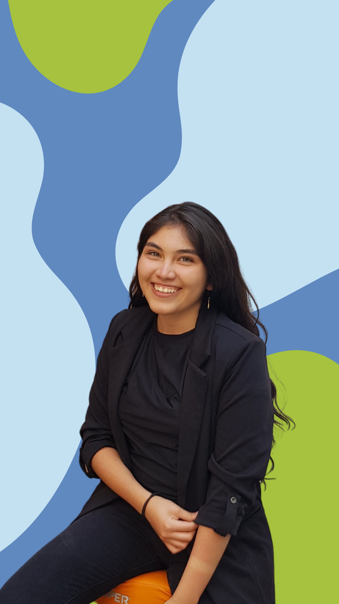

Soy Licenciada en Nutrición y Educadora en Diabetes. Creo profundamente que la alimentación debe ser una herramienta para vivir mejor y no una fuente de frustración.
Mi objetivo es que cada consulta sea un espacio donde entiendas tu cuerpo, desarrolles hábitos sostenibles y aprendas a disfrutar el proceso.
No busco que hagas una alimentación perfecta. Busco darte las herramientas para que disfrutes cuidar de ti toda la vida.

Este viaje comenzó con la historia de alguien más: el nacimiento de mi hermana menor me hizo conocer de cerca lo que significa tener necesidades nutricias especiales y convivir con la nutrición enteral en casa.
Aquí entendí que la nutrición abarca muchísimo más que contar calorías: se trata de unir el conocimiento médico con la realidad de cada persona, desde lo social hasta lo emocional.
Profundicé en la nutrición clínica en pediatría, y aprendí de cerca sobre neurología, cardiología y gastroenterología junto a equipos médicos multidisciplinarios.
Me certifiqué como educadora en diabetes mientras brindaba consultoría de nutrición online en Hope & Health Medical Clinic, conectando con personas de distintas partes del mundo que buscaban mejorar su alimentación.
Realicé un mastering en Salud Digestiva desde la Medicina Funcional y, después, un curso de postgrado en Nutrición en pediatría, para profundizar aún más en cada etapa de la vida.
Actualmente doy consulta online y presencial en la clínica UDONI, donde apoyamos a peques y grandes a tener el mejor estilo de vida posible. Me encantaría acompañarte a ti también a mejorar tus hábitos.